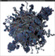
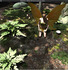
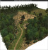
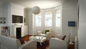
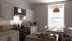
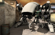
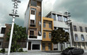

Picture Gallery
The pictures in this gallery are rendered with different rendering tools building on the Embree Ray Tracing Kernels.
|  | VMD "Organelle", using vdW-representation and rendered using analytical spheres. Model courtesy Carsten Kutzner, MPI BPC, Goettingen. Rendered with the OSPRay high-fidelity visualization toolkit. |
|  | The Utah Fairy (174k triangles), rendered with textures, transparency, and shadows. Model originally modelled using DAZ3D's DAZ Studio. Rendered with the OSPRay high-fidelity visualization toolkit. |
|  | The "xfrog" model of 1.7 billion (instanced) triangles and transparency textures. Model originally created using XFrog, model courtesy Oliver Deussen, University of Konstanz. Rendered with the OSPRay high-fidelity visualization toolkit. |
| Artwork by Bertrand Benoit (www.bbb3viz.com). Rendered with Corona Renderer. | |
| Jaguar F-type by Jeff Patton (www.jeffpatton.net). Rendered with Corona Renderer. | |
| Artwork by Ryan Coyoca (www.4thlight.com). Rendered with Corona Renderer. | |
| My wood by Tom Zamorin (tomyoda.deviantart.com). Rendered with Corona Renderer. | |
| Luxurious Living Room by Eduard Caliman (www.eduardcaliman.com). Rendered with Corona Renderer. | |
| Crunch Cup by Peter Ang (www.dartofang.com). Rendered with Corona Renderer. | |
| Barts Square by The Boundary (www.the-boundary.com) and Iain Banks (www.iainbanks.com), client Helicar Bar, designer Johnson Naylor. Rendered with Corona Renderer. | |
| tineKhome by JakubCech (www.jakubcech.net). Rendered with Corona Renderer. | |
 |
Sigurd Ressel Falcon Chair by Peter Guthrie (www.peterguthrie.net). Rendered with Corona Renderer. |
| Iceland Bedroom by Talcik Demovicova Visuals (www.jurajtalcik.com). Rendered with Corona Renderer. | |
| Kathedrale by Martin Geupel (www.racoon-artworks.de). Rendered with Corona Renderer. | |
| Cave of the forgotten books (www.racoon-artworks.de). Rendered with Corona Renderer. | |
|  | The White Room model by Jay Hardy (http://www.blendswap.com/blends/view/41683) released under the Creative Commons Attribution 3.0 license. Rendered with Autodesk RapidRT. |
|  | Country-Kitchen by Jay Hardy (http://www.blendswap.com/blends/view/42851) released under the Creative Commons Attribution 3.0 license. Rendered with Autodesk RapidRT. |
| Interiour Room model by John Cedric Gomez Macabantad. Rendered by Khalid Abu Eid using SimLab Composer. | |
| Office model by Khalid Abu Eid. Rendered using SimLab Composer. | |
| Glass by Lucas Holwerda. Rendered using SimLab Composer. | |
| Red Star by Mikko Hörkkö. Rendered using SimLab Composer. | |
| Seiko Watch by Mikko Hörkkö. Rendered using SimLab Composer. | |
|  | Droid from the future concept. Robot model from Cadnav, cube map is courtesy of Spiney. Rendered using Nebula Render. |
|  | Urban exterior illuminated by the Sun and the sky. Scene made by Hai le. Rendered using Nebula Render. |
{kind=link}
{kind=link}
{kind=link}
{kind=link}
{kind=link}
{kind=link}
{kind=link}
{kind=link}
{kind=link}
{kind=link}
{kind=link}
{kind=link}
{kind=link}
{kind=link}
{kind=link}
{kind=link}
{kind=link}
{kind=link}
{kind=link}
{kind=link}
{kind=link}
{kind=link}
{kind=link}